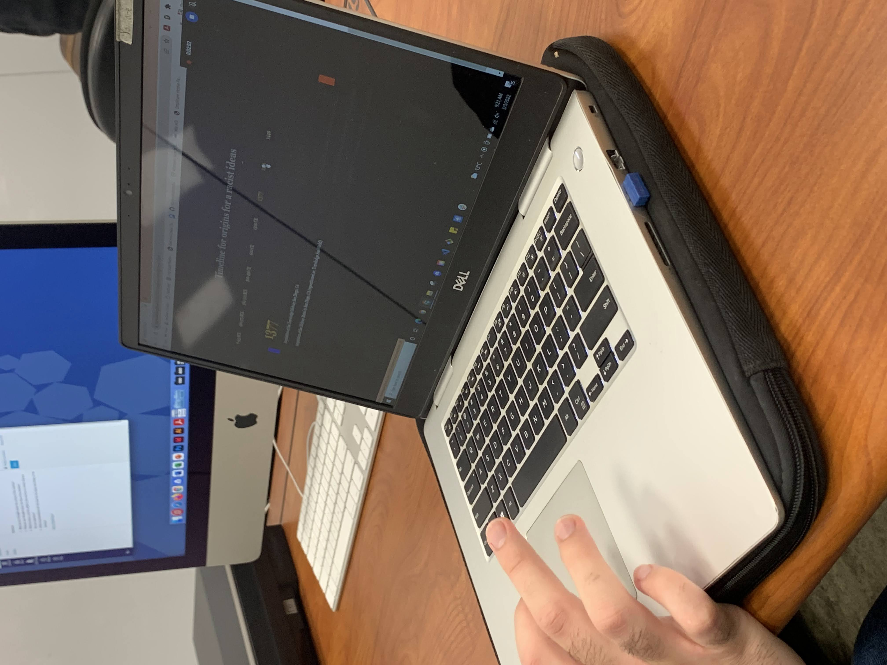
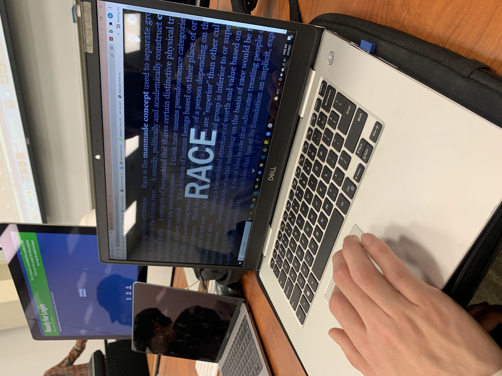

Tester 1
- Perhaps have bigger navigation icons
- Perhaps make the icons more noticeable by different color
- Add share your thoughts at the bottom of the home page
- Instead of plus sign on the forum, write “add comment”
- Remove the blinking line on the index page
- Add enter the page more clear

Tester 2
- Remove the blinking line on the index page
- Scroll sign bigger on home page
- Navigation on the index page too?
- User flow confusion

Tester 3
- Mention use of arrow keys for timeline
- Remove the left and right padding at the ends of the timeline
- Perhaps Kendi’s qoute not needed?
- Have navigation pages, Home, Timeline, Forum?
- Limit the length of the timeline text
- Perhaps a rhetorical questions at the end of each line in timeline
Tester 4
- There is weird space at the bottom of the forum page
- Do not need forum page icon on the forum page
- Instead of overlay, use modal or position fixed?
- Work on navigation
- Enter field for loading pages need to be more clear
How I will update my Final Project based on the feedback.
Through the user testing I gained some great insight for the usability of the website. I will be working on making a better user experience through navigation changes. Overlay changes are definitely needed and are an easy fix. I will also be combining my index and home pages for a better and concise flow both internally for the code and visually for the users.